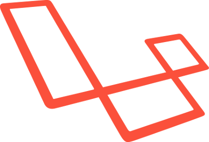

Inleiding
RemindMe is een webapplicatie waarmee gebruikers een herinnering kunnen maken, die ze later dan per sms toegestuurd krijgen. Er kan een account aangemaakt worden. Dit biedt
onder andere de mogelijkheid om contacten te beheren en herinneringen te laten herhalen. Registreren is echter niet nodig, er kon ook een
zogenaamde 'Quick reminder' gemaakt worden. Het nadeel hiervan is dat de prijs veel hoger ligt.
De applicatie is geschreven in Laravel. Wanneer een gebruiker zich inlogt, komt hij terecht bij het 'dashboard'. Dit deel van de site maakt gebruikt van het JavaScript
framework Vue.js. Deze communiceert met de backend door middel van een API.
Samenvatting
Zie inleiding.
Database
Backend
Gebruikte technologiën
|

|
Laravel 5.2
Laravel is het meest gebruikte PHP framework. Het bevat veel tools die het ontwikkelingsproces helpen versnellen. Zo maakt het gebruik
van artisan om code te genereren voor veelgebruikte zaken. De Eloquent ORM vergemakkelijkt database operaties, en het Blade templating
systeem zorgt voor overzichtelijke views.
Bovenop dit alles beschikt Laravel over een expressieve en elegante syntax.
Persoonlijk heb ik voor Laravel gekozen omwille van de gelijkenissen met ASP.NET, een C# framework waar ik al eerder ervaring in had.
Alternatieven: CodeIgniter, CakePHP, Symfony
|
|
|
Twilio
Om SMS-berichten te versturen kunnen maakt de applicatie gebruik van Twilio. Deze service voorziet een API, waardoor een bericht
verstuurd kan worden door middel van een HTTP request. Twilio voorziet ook een library die beschikbaar is via Composer. Dit zorgt ervoor
dat de service snel opgezet kan worden.
Alternatieven: Plivo, Nexmo
|
|
|
Mollie
Mollie is een service om online betalingen te regelen. Het voorziet veel betalingsmogelijkheden, gaande van Bancontact tot Paypal en zelfs
bitcoin. Mollie host een API en voorziet hiervoor ook een PHP library, wat maakt dat er met een paar regels code al een betaling kan worden
uitgevoerd.
Voor de ontwikkeling van een applicatie kan een test-API gebruikt worden. Deze stelt de developer in staat om betalingen na te bootsen, zonder
deze effectief uit te voeren.
Alternatieven: Adyen, Ingenico
|
|
|
JSON Web Token
De applicatie maakt hevig gebruik van een API. Een RESTful API is per definitie stateless. Dit wil zeggen dat session-based authenticatie geen
goede optie is. JSON Web Token (JWT) biedt hiervoor een oplossing. Een token bevat geëncrypteerde authenticatiegegevens van de gebruiker, en wordt
client-side bijgehouden. Dit token wordt meegegeven in de header van elk request naar de API, om zo de gebruiker te kunnen authenticeren.
De applicatie maakt gebruik van de opensource tymon/jwt-auth library, specifiek voor Laravel.
Alternatieven: OAuth, basic
|
Structuur
Het informatieve deel van de applicatie is een 'normale' website. Het gaat over de homepage, de contactpagina en de pricing pagina. Dit
zijn vrijwel volledig statische pagina's.
Het dashboard daarentegen is een zogenaamde 'Single Page Application (SPA)'. Bij het navigeren naar het dashboard wordt eenmalig alle nodige code geladen.
Een JavaScript framework zorgt ervoor dat alle requests asynchroon geladen worden. Ook de routing wordt afgehandeld door het framework. Hierdoor hoeft de gebruiker
nooit rechtstreeks een nieuwe pagina op te vragen of te herladen. Dit zorgt voor een vlotte user experience.
Om dit allemaal te kunnen voorzien maakt de applicatie gebruik van een RESTful API.
De API voorziet een aantal endpoints om met de applicatie te werken. Ze maakt gebruik van de zogenaamde 'HTTP werkwoorden' die overeenstemmen met een CRUD operatie.
Zo staat een POST request voor een insert, GET voor een read, PUT voor een update, en een DELETE request zorgt voor een delete.
Deze requests worden gebundeld onder de 'api' route. Om bijvoorbeeld alle contacten op te vragen, dient er een GET request gestuurd te worden naar '../api/contacts'.
De API maakt gebruik van JSON als dataformaat. De server stuurt ook logische HTTP statuscodes. Een niet gevonden record geeft bijvoorbeeld een 404 als antwoord, of
een niet geauthorizeerde actie levert een 403 op.
| Endpoint |
Method |
Omschrijving |
| /contacts/{id?} |
GET |
Antwoord met een array van alle contactpersonen van de geauthenticeerde gebruiker, of met slechts 1 contactpersoon als er een id wordt gegeven |
| /contacts |
POST |
Insert een contactpersoon aan de hand van de POST-gegevens. |
| /contacts/{id} |
DELETE |
Delete de contactpersoon met het gegeven ID. |
| /contacts |
PUT |
Update de contactpersoon aan de hand van de gegevens. |
| /reminders/upcoming |
GET |
Antwoord met een array van alle reminders met een datum later dan vandaag. |
| /reminders/cancel/{id} |
GET |
Annuleert de reminder met het gegeven ID. |
| /reminders |
POST |
Insert een nieuwe reminder aan de hand van de POST-gegevens. |
| /quickreminder |
POST |
Insert een quick reminder aan de hand van de POST-gegevens. |
| /login |
POST |
Probeert een gebruiker te authenticeren. Antwoord met een JWT als de authenticatie succesvol is |
| /register |
POST |
Registreert een nieuwe gebruiker. |
| /user |
GET |
Antwoord met enkele gegevens van de geauthenticeerde gebruiker. |
Models & Repositories
Eloquent ORM
Laravel maakt gebruikt van het Eloquent ORM. Elk Eloquent model komt overeen met een tabel in de database. Op dit model kunnen dan relaties
gedefiniëerd worden. Standaard komt de classnaam overeen met de tabelnaam. Zo zal het model Contact queries uitvoeren op de 'contacts' tabel.
Het Contact model ziet er bijvoorbeeld als volgt uit:
class Contact extends Model
{
public $timestamps = false;
public function user()
{
return $this->belongsTo('User');
}
}
De $timestamps property wordt gebruikt om aan te duiden of er voor een model de datum moet worden bijgehouden waarop het aangemaakt of gewijzigd wordt.
Relaties met andere tabellen worden aangeduid aan de hand van functies. Zo wordt bijvoorbeeld een OneToMany relatie uitgedrukt door hasMany() en
belongsTo().
Eloquent zorgt ervoor dat veelgebruikte queries geëncapsuleerd worden op de models. Zo voorziet het enkele logische functies zoals delete(), save(),
where(), enz.
Meer complexe operaties kunnen nog altijd in rauwe SQL worden uitgevoerd.
Repository pattern
De applicatie maakt gebruik van het repository pattern. Dit is een extra abstractie van de database layer. Een repository bundelt een aantal operaties op
een model in een class. De controller hoeft dan niet langer rechtstreeks de database layer aan te spreken via de models, maar gebruikt in de plaats de
repositories.
De repository en het model zijn zo echter wel nog tightly coupled. Om dit tegen te gaan worden interfaces gebruikt. De interface definiëert een 'contract'
waar de repository zich aan moet houden. In de controller wordt vervolgens de interface als dependency gebruikt. Nu maakt het niet meer uit hoe de data
opgehaald wordt, als de implementatie zich maar aan de interface houdt.
Het gebruik van repositories zorgt niet enkele voor beter leesbare code, maar verbetert ook de mogelijkheid
tot unit testing.
De interface voor de contactpersonen ziet er bijvoorbeeld als volgt uit:
interface IContactRepository
{
public function getContactById($contactid);
public function getContactsByUserId($userid);
public function insertContact($contact);
public function deleteContact($contactid);
public function updateContact($id, $newValues);
}
Vervolgens implementeert de repository de bijhorende interface. Zo ziet de getContactsByUserId() er als volgt uit.
namespace App\Repositories\Contact;
use App\Models\Contact;
class ContactRepository implements IContactRepository
{
private $_contact;
public function __construct(Contact $contact)
{
$this->_contact = $contact;
}
...
public function getContactsByUserId($userid)
{
return $this->_contact->where('user_id', $userid)->get();
}
...
}
Om de repository te gebruiken wordt de interface geïnjecteerd in de constructor.
public function __construct(IContactRepository $contact)
{
$this->_contactRepository = $contact;
}
Omdat enkel de interface wordt gebruikt in de controller, weet Laravel niet welke implementatie ze hiervoor moet gebruiken. Daarom moeten de interface en
de bijhorende implementatie aan elkaar gekoppeld worden. Dit gebeurt in de register method in de AppServiceProvider.
$this->app->bind('App\Repositories\Contact\IContactRepository',
'App\Repositories\Contact\ContactRepository');
Structuur
Elk model krijgt op deze manier zijn eigen repository. Omdat dit project relatief klein is, heeft elke repository zijn eigen interface.
Een betere oplossing voor grotere projecten is om een basis interface te schrijven met algemene CRUD acties. Vervolgens kunnen specifieke
interfaces deze erven en eventueel nog methods toevoegen of aanpassen.
De folderstructuur voor de models ziet er als volgt uit:
app/
...
.
|-- Models/
|-- Contact.php
|-- Quick_reminder.php
|-- User_order.php
|-- User_reminder.php
`-- User.php
`-- Repositories/
|-- Contact/
|-- ContactRepository.php
`-- IContactRepository.php
|-- Quick_reminder/
|-- Quick_reminderRepository.php
`-- IQuick_reminderRepository.php
|-- User_order/
|-- User_orderRepository.php
`-- IUser_orderRepository.php
|-- User_reminder/
|-- User_reminderRepository.php
`-- IUser_reminderRepository.php
`-- User/
|-- UserRepository.php
`-- IUserRepository.php
Alle repositories hebben enkele basis CRUD methods. De enige repository die hiervan afwijkt is de UserRepository. De tymon/jwt-auth
library gebruikt standaard het zijn eigen UserInterface. Daarom moet de UserRepository een extra interface implementeren. Ook moet in
config/jwt.php een verwijzing toegevoegd worden naar de nieuwe implementatie.
namespace App\Repositories\User;
use App\Models\User;
use Tymon\JWTAuth\Providers\User\UserInterface;
class UserRepository implements IUserRepository, UserInterface
{
...
}
Controllers
De controllers worden opgesplits in twee delen. Enerzijds zijn er de controllers die verantwoordelijk zijn voor de API. Deze bevatten allerhande
methods om de gewenste database operaties uit te voeren. Anderzijds zijn er de controllers die de webpagina's genereren. Deze doen vaak niets anders
dan een view returnen.
Controllers/
|-- API/
|-- AuthenticateController.php
|-- ContactsController.php
|-- RemindersController.php
`-- UserController.php
|-- Controller.php
|-- DashboardController.php
|-- HomeController.php
`-- PaymentController.php
ContactsController
De ContactsController is niet meer dan een bundeling van CRUD operaties. De methods krijgen dan ook namen die overeenstemmen met de actie.
namespace App\Http\Controllers\API;
use App\Http\Requests;
use ...
class ContactsController extends Controller
{
private $_contactRepository;
private $_userRepository;
private $_userReminderRepository;
private $_user;
public function __construct(..) { .. }
public function get(..) { .. }
public function insert(..) { .. }
public function delete(..) { .. }
public function update(..) { .. }
}
In de constructor worden de nodige repositories via dependency injection geïnstantieerd. Deze worden dan als properties bijgehouden om zo
gebruikt te kunnen worden in de methods.
public function __construct(IContactRepository $contact, ...)
{
$this->_user = JWTAuth::parseToken()->toUser();
$this->_contactRepository = $contact;
$this->_userRepository = $user;
$this->_userReminderRepository = $userReminder;
}
De ContactsController kan alleen maar gebruikt worden als de user geauthenticeerd is, en gebruikt daarom de jwt.auth
middleware. Deze is gedefiniëerd in routes.php. De geauthenticeerde gebruiker wordt via de toUser() method
in een property gestoken.
Vrijwel alle methods van de controller volgen de zelfde structuur. Eerst wordt de eventuele input gevalideerd. Vervolgens wordt de
logica uitgevoerd die van de method verwacht wordt. Ten slotte wordt er een JSON antwoord teruggestuurd. Moest er ergens in de method
iets foutlopen, dan wordt ook een logische HTTP code teruggestuurd. Zo zal foutieve data voor een 422 code zorgen.
Als voorbeeld de delete() method:
public function delete(Request $request, $id)
{
$contact = $this->_contactRepository->getContactById($id);
if(!$contact)
{
return response()->json("Not found", 404);
}
if($contact->user_id != $this->_user->id)
{
return response()->json("Not authorized", 403);
}
$reminders = $this->_userReminderRepository
->getUserRemindersWhere([["contact_id", $id]]);
foreach($reminders as $reminder)
{
$this->_userReminderRepository
->updateUserReminder($reminder->id, [
"recipient" => $contact->number,
"contact_id" => NULL
]);
}
$result = $this->_contactRepository->deleteContact($id);
return response()->json($result);
}
RemindersController
De RemindersController is verantwoordelijk voor de operaties op de User_reminders tabel. Deze is vrijwel analoog aan de ContactsController.
Het enige verschil hier is dat er een extra _createUserReminder() method is. Deze wordt gebruikt bij insertReminder().
Dit is een aparte method om de code overzichtelijker te maken.
class RemindersController extends Controller
{
private $_userRepository;
private $_userReminderRepository;
private $_user;
public function __construct(..) { .. }
public function getUpcomingReminders() { .. }
public function insertReminder(..) { .. }
public function cancelReminder(..) { .. }
private function _createUserReminder(..) { .. }
}
UserController
De UserController heeft slechts één method, getUserDetails(). Deze wordt gebruikt, zoals de naam al zegt, om enkele details van
de gebruiker op te vragen. Uiteraard gebruikt deze controller ook de jwt.auth middleware.
AuthenticateController
Deze controller zorgt voor de authenticatie en registratie van de gebruiker. Authenticate() probeert aan de hand van de logingegevens
een JWT token aan te maken. Als de authenticatie succesvol is, worden er, samen met het token, enkele details over de gebruiker meegegeven. Dit om
een request te besparen.
De register() method wordt gebruikt om een gebruiker te registreren.
class AuthenticateController extends Controller
{
private $_userRepository;
public function __construct(..) { .. }
public function authenticate(..) { .. }
public function register(..) { .. }
}
DashboardController
Het enige wat deze controller doet, is een view returnen voor het dashboard.
HomeController
De HomeController zorgt voor alle pagina's van de 'gewone' website: de homepage, de pricing pagina, en de contactpagina.
Ook heeft de controller een method om het verzenden vanhet contactformulier af te handelen.
PaymentController
De PaymentController is vrijwel de meest uitgebreide controller. De controller zorgt voor zowel het kopen van quick reminders
alsook het kopen van credits door een gebruiker. Ook zorgt deze controller voor het aanmaken van de quick reminder wanneer de
betaling succesvol is afgehandeld.
namespace App\Http\Controllers;
use ...;
class PaymentController extends Controller
{
private $_mollie;
private $_userOrderRepository;
private $_userRepository;
private $_quickReminderRepository;
public function __construct(..) { .. }
public function createUserOrder(..) { .. }
public function userOrderRedirect(..) { .. }
public function createQuickReminderOrder(..) { .. }
public function quickReminderOrderRedirect(..) { .. }
}
Een betaling bestaat altijd uit twee delen, de create en de redirect. In de create wordt eerst de
input gevalideerd. Vervolgens wordt een order aangemaakt. Deze gegevens worden hierna naar de Mollie API verstuurd. Het order wordt hierna
geüpdate met het ID van de betaling. Ten slotte wordt de gebruiker geredirect naar de website van Mollie om te betaling te voltooien.
Wanneer de gebruiker de betaling succesvol afhandelt, wordt hij doorverwezen naar de redirect method. Hier wordt nagegaan
of de betaling gelukt is. Vervolgens wordt het order geupdate, en wordt de actie uitgevoerd waar de gebruiker voor betaald heeft.
In de constructor wordt eerst de Mollie API library geïnstantieerd. Dit gebeurt aan de hand van de API key. Vervolgens worden ook alle
nodige repositories geladen.
public function __construct(IUserRepository $userRepository, ...)
{
$this->_mollie = new Mollie_API_Client;
$key = env('MOLLIE_API_KEY');
$this->_mollie->setApiKey($key);
$this->_userOrderRepository = $userOrderRepository;
$this->_userRepository = $userRepository;
$this->_quickReminderRepository = $quickReminderRepository;
}
Als voorbeeld het aanmaken van een quick reminder order:
public function createQuickReminderOrder(Request $request)
{
$this->validate($request, [
'recipient' => 'max:255|required',
'send_datetime' => 'required',
'message' => 'required|max:255'
]);
$values = [
"recipient" => $request->recipient,
"send_datetime" => $request->send_datetime,
"message" => $request->message,
"is_payed" => false
];
$identity = $this->_quickReminderRepository
->insertQuickReminder($values);
$payment = $this->_mollie->payments->create(array(
"amount" => 0.50,
"description" => "Your quick reminder.",
"redirectUrl" => url('/thankyou/'.$identity)
));
$this->_quickReminderRepository
->updateQuickReminder($identity, ["payment_id" => $payment->id]);
header("Location: " . $payment->getPaymentUrl());
exit;
}
Nadat het request gevalideerd is, wordt een nieuwe reminder aangemaakt in de database. De boolean is_payed wordt op false
gezet. Hierdoor zal de reminder genegeerd worden door de berichtenservice.
Het ID van de nieuwe reminder wordt meegegeven aan de Mollie API. Ook wordt dit ID verwerkt in de redirectUrl. Wanneer de betaling
verstuurd is, wordt de reminder geüpdate met de payment_id. Dit ID wordt gebruikt om later de betaalstatus op te vragen.
Als de betaling is uitgevoerd, wordt de gebruik geredirect naar de opgegeven URL. Aan de hand van de orderID in deze URL wordt
de reminder terug opgevraagd uit de database, en wordt de betalingsstatus nagekeken. Is alles goed verlopen, dan wordt de boolean
is_payed op true gezet, en krijgt de gebruiker te zijn dat de betaling gelukt is. De reminder is nu
klaar om verstuurd te worden.
Als er iets is misgelopen, of als de betaling nog niet voltooid is, dan krijgt de gebruiker dit ook te zien.
$payment = $this->_mollie->payments->get($reminder->payment_id);
if ($payment->isPaid())
{
$this->_quickReminderRepository
->updateQuickReminder($reminder->id, ["is_payed" => true]);
$data["message"] = "We received your payment successfully!";
}
Views
Blade templates
Alle pagina's maken gebruik van het Blade templating systeem van Laravel. Dit is een systeem dat veel gelijkenissen toont met Razor in
ASP.NET. Het zorgt ervoor dat er gemakkelijk layouts gedefiniëerd kunnen worden, en dat scripts en styles op een overzichtelijke manier
kunnen worden ingeladen.
Inline PHP code ziet er ook een stuk beter uit door het gebruik van accolades in plaats van <?php?> tags.
Structuur
De views worden gesorteerd in folders. Elk deel van de site krijgt zijn eigen folder, alsook de errorpagina's en de gedeelde layouts.
Vue.js maakt ook gebruik van een aantal templates, dat hier ook een eigen folder krijgt
views/
|-- dashboard/
`-- home.blade.php
|-- errors/
|-- 404.blade.php
`-- 503.blade.php
|-- home/
|-- contact.blade.php
|-- index.blade.php
|-- paymentcomplete.blade.php
`-- pricing.blade.php
|-- layouts/
`-- site.blade.php
`-- vue/
`-- ...
Layouts
De website maakt gebruik van een Blade layout. Dit zorgt ervoor dat gemeenschappelijke delen, zoals header of footer, maar op
één plaats aangepast hoeven te worden. De verschillende pagina's 'extenden' dan de layout. Scripts of stylesheets die specifiek
zijn voor een pagina kunnen in sections geplaats worden.
De structuur van de layout ziet er als volgt uit:
<!DOCTYPE html>
<html>
<head>
...
@yield('style')
</head>
<body>
<header>...</header>
<main>
@yield('content')
</main>
<footer>...</footer>
@yield('scripts')
</body>
</html>
Een pagina ziet er dan als volgt uit: eerst wordt aangeduid welke layout gebruikt wordt, en vervolgens wordt voor elke section specifieke
code geschreven. Moest een pagina bijvoorbeeld geen speciaal script nodig hebben, dan kan deze section gewoon weggelaten worden.
@extends('layouts.site')
@section('style')
<link rel="stylesheet" href="{{ url('css/main.css') }}">
@endsection
@section('content')
@endsection
@section('scripts')
<script src"myscript.js"></script>
@endsection
De views in de Vue folder worden nog verder besproken in het deel frontend.
Authenticatie
De applicatie maakt gebruik van een RESTful API. Zo'n API is per definitie stateless. Concreet wil dit zeggen dat elk request alle nodige
informatie bevat om afgehandeld te worden door de server. Dit betekent dat de API technisch gezien geen gebruik mag maken van session
based authenticatie.
Alternatieven zoals OAuth en JSON Web Tokens (JWT) bieden hiervoor een oplossing. De applicatie maakt gebruik van dit laatste.
JSON Web Token
Een JSON Web Token is een compact token dat mee verstuurd kan worden in de header van een request. Het wordt serverside aangemaakt
en geëncrypteerd aan de hand van een secret key. Hierdoor kan de authenticiteit geverifiëerd worden.
Een token bestaat uit 3 delen: header, payload en signature. Deze worden gescheiden door een punt. Een token heeft dus de volgende
vorm:
xxxx.yyyy.zzzz
De header is een JSON object dat doorgaans bestaat uit twee properties: het type token, en het soort hashing algoritme. Dit object
wordt vervolgens Base64 geëncodeerd.
Het tweede deel, de payload, bevat het grootste deel van de informatie. Ook dit is een JSON object dat Base64 geëncodeerd wordt.
Het bevat enkele vaste properties, zoals bijvoorbeel de issuer (iss) en de expiration date (exp).
Naast deze properties kunnen er nog custom properties aangemaakt worden, die bijvoorbeeld meer informatie over de gebruiker
bevatten.
Het laatste deel is de signature. Dit is een geëncrypteerde vorm van de header en de payload, aan de hand van een secret key. Deze
signature wordt gebruikt om de authenticiteit te verifiëren. Het bevat de header en de payload om ervoor te zorgen dat deze niet
gewijzigd kunnen worden.
Een token kan er dan uitendelijk als volgt uitzien:
eyJhbGciOiJIUzI1NiIsInR5cCI6IkpXVCJ9.
eyJzdWIiOiIxMjM0NTY3ODkwIiwibmFtZSI6IkpvaG4gRG9lIiwiYWRtaW4iOnRydWV9.
TJVA95OrM7E2cBab30RMHrHDcEfxjoYZgeFONFh7HgQ
JWT Auth
De applicatie maakt gebruikt van de tymon/jwt-auth library. Deze open-source library is specifiek voor Laravel geschreven
en biedt alle nodige middelen om met JWT te werken. Zo voorziet het bijvoorbeeld een method om van een user een token te maken met
JWTAuth::fromUser(), of de make() method om een eigen payload te maken.
De library voorziet ook een eigen authenticatie middleware. Deze middleware zal het token uit een request halen en proberen een gebruiker
te authenticeren. Alle API controllers die authenticatie nodig hebben worden dan ook gegroepeerd onder deze middleware. Dit gebeurt in het
routes.php bestand.
Route::group(['namespace' => 'API', 'prefix' => 'api'], function() {
Route::group(['middleware' => 'jwt.auth'], function() {
});
});
Berichtenservice
Om reminders per SMS te versturen maakt de applicatie gebruik van een Laravel command. Dit is een class die zowel in de applicatie
gebruikt kan worden, alsook via de console. Zo kunnen de reminders verstuurd worden via het volgende console command:
$ php artisan reminders:check
Via een cronjob wordt dit command elke minuut uitgevoerd. De class wordt opgeslagen in app/Console/Commands en
ziet er als volgt uit:
class CheckReminders extends Command
{
protected $signature = 'reminders:check';
protected $description = 'Checks if there are ...';
private $_quickReminderRepository;
private $_userReminderRepository;
private $_userRepository;
private $_contactRepository;
public function __construct(..) { ... }
public function handle() { ... }
private function _sendReminder(..) { ... }
private function _handleRepeatedReminder(..) { ... }
private function _getRecipient(..) { ... }
}
In de constructor worden weer de gebruikte repositories geïnjecteerd. De kern van de logica bevindt zich in de handle()
method. Hier worden eerst alle reminders opgehaald die een send_datetime hebben eerder dan de huidige datetime.
Voor elk van deze berichten wordt dan een SMS verstuurd met behulp van de Twilio API. De Twilio library zorgt ervoor dat dit in
één regel code kan:
Twilio::message($reminder->recipient, $reminder->message);
Naast het versturen van het bericht, wordt er ook nog een log hiervan gemaakt. Dit gebeurt allebei in de _sendReminder()
method.
Voor quick reminders houdt het er hierbij op. Voor user reminders daarentegen moet er ook nog gekeken worden of de reminder herhaalt dient te worden.
Als dit het geval is, wordt er een nieuwe reminder aangemaakt met een latere send_datetime. Het gebruik van de PHP
DateTime class zorgt dat dit in duidelijke code kan gebeuren.
$newDate = new \DateTime($reminder->send_datetime);
switch($reminder->repeat_id)
{
case 2:
$newDate->add(new \DateInterval("P1D"));
break;
case 3:
$newDate->add(new \DateInterval("P7D"));
break;
case 4:
$newDate->add(new \DateInterval("P1M"));
break;
case 5:
$newDate->add(new \DateInterval("P1Y"));
break;
}
De _getRecipient() method is een helperfunctie die nagaat of de reminder een contact_id heeft. Als dit zo is,
dan wordt het nummer van de bijhorende contactpersoon opgehaald.
Scheduler
Laravel voorziet een Task Scheduler. Hier maakt de applicatie dan ook gebruik van. Om van de scheduler gebruik te kunnen maken, moet er
een cronjob opgesteld worden op de server:
* * * * * php /path/to/artisan schedule:run >> /dev/null 2>&1
Deze cronjob voert elke minuut het artisan command schedule:run uit. Wat dit command doet wordt bepaald in
app/Console/Kernel.php. Omdat we een apart command hebben geschreven voor de berichtenservice, is deze class
heel compact:
namespace App\Console;
use Illuminate\Console\Scheduling\Schedule;
use Illuminate\Foundation\Console\Kernel as ConsoleKernel;
class Kernel extends ConsoleKernel
{
protected $commands = [
Commands\CheckReminders::class
];
protected function schedule(Schedule $schedule)
{
$schedule->command('reminders:check')->everyMinute();
}
}
Unit Testing
Frontend
Gebruikte technologiën

|
Vue.js
Vue is een klein en flexibel JavaScript framework. Het stelt ons in staat om snel interactieve pagina's
te maken. Het is vergelijkbaar met andere MV* frameworks zoals Angular of React, en deelt ook veel eigenschappen.
Het dashboard van de applicatie is volledig rond dit framework gebouwd.
Alternatieven: AngularJS, React
|

|
Bootstrap Grid
Omdat Bootstrap sites vaak erg op elkaar lijken, heb ik ervoor gekozen om de styling van de site volledig
zelf te schrijven. Wel gebruik ik het gridsysteem om responsive design te vergemakkelijken.
Op de website van Bootstrap kunnen custom builds compiled worden. De applicatie maakt gebruik van een build die enkel
het gridsysteem bevat, met wat kleine aanpassingen.
Alternatieven: Foundation, Kickstart
|
|
|
Font Awesome
Font Awesome is een populair icon font. Het zorgt voor kwalitatieve icons, die gemakkelijk zijn in het gebruik.
Font Awesome voorziet zelfs handige CSS classes om bijvoorbeeld een loading icon te spinnen.
Alternatieven: Glyphicons, Fontello
|
Vue.js
Vue is een JavaScript framework dat staat voor flexibiliteit en snelheid. Het is simpel om te gebruiken dankzij zijn intuïtieve
syntax. Het is een soort 'Angular Lite', met kenmerken van andere frameworks zoals React. Om Vue klein te houden, bevat het enkel de
kern functionaliteit. Functionaliteiten die niet overal nodig zijn worden in aparte componenten gehouden. Zo gebruikt de applicatie
ook de vue-router package, om routing te voorzien, en de vue-resources package, om makkelijk HTTP requests
te kunnen sturen.
Routing
Mixins
Stores
Dashboard Home
Contacts
Account
Authenticatie
Datetime picker
Homepage
Conclusie
 name
: varchar(255)
name
: varchar(255)